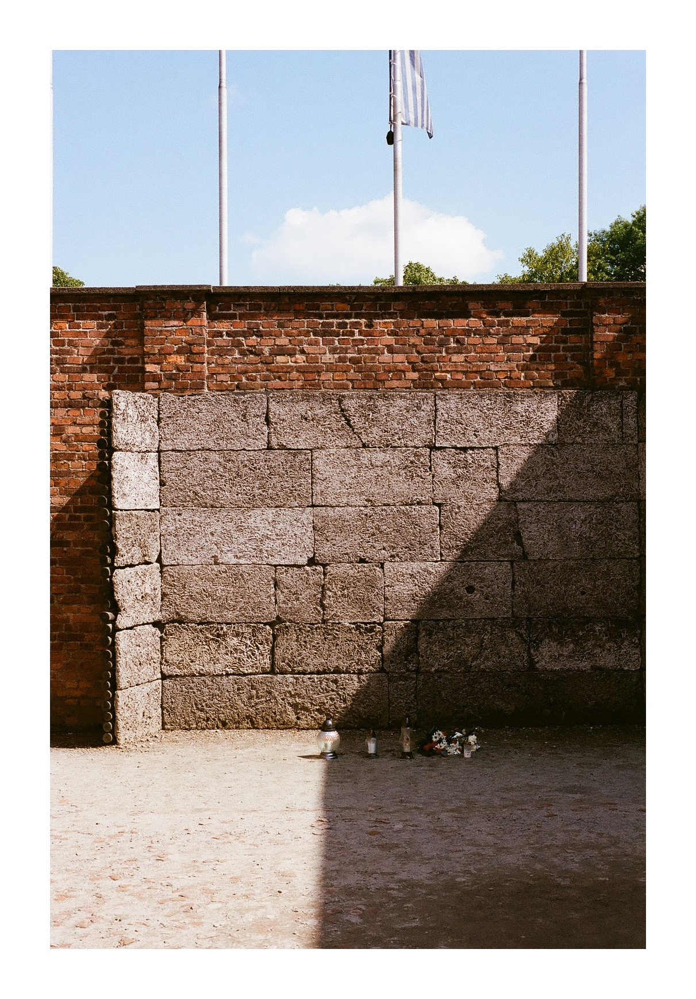
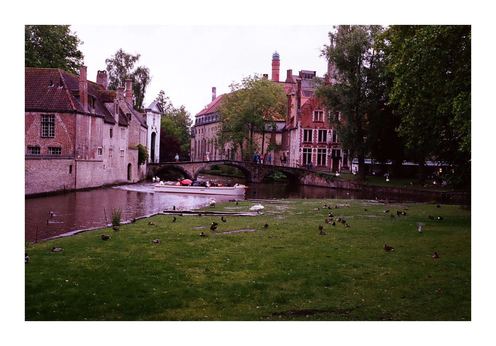
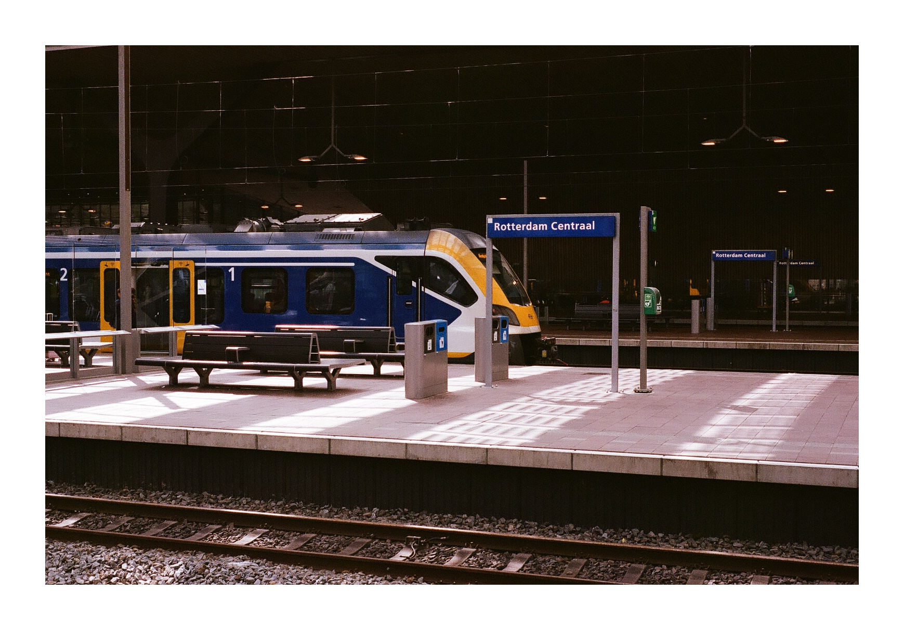
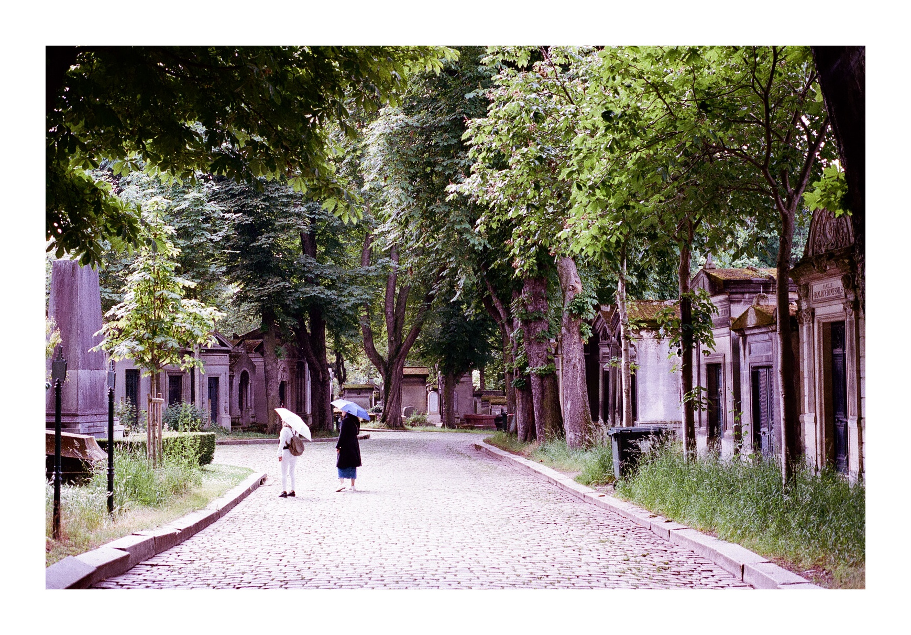
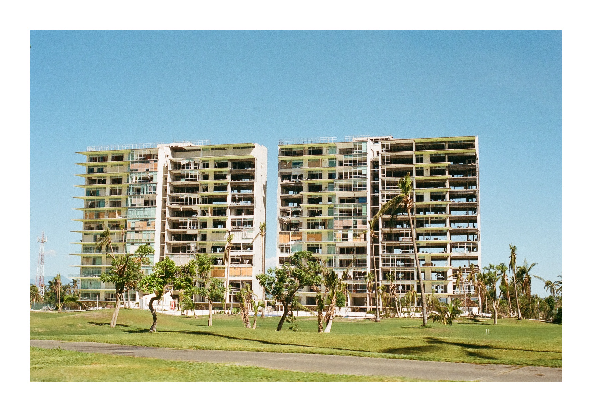
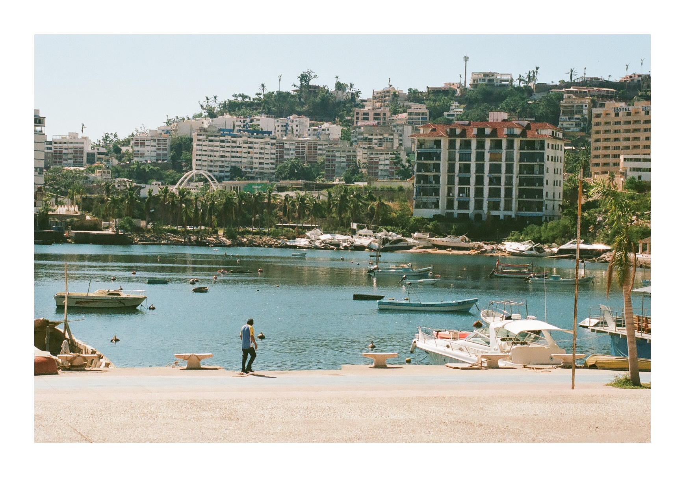

Raw Textures & Captured Moments.
An analog photography and audio production portfolio.
Audio Projects
Track Title 01
Produced in Ableton Live.
Analog Scans







About
Audio producer and analog photographer based in Sacramento. Whether shaping soundscapes with a bass guitar and Ableton or capturing the world on color negative film, my work is driven by a love for physical, authentic textures. When I'm not in the studio, I'm an educator helping to shape the next generation of creatives.